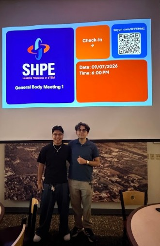
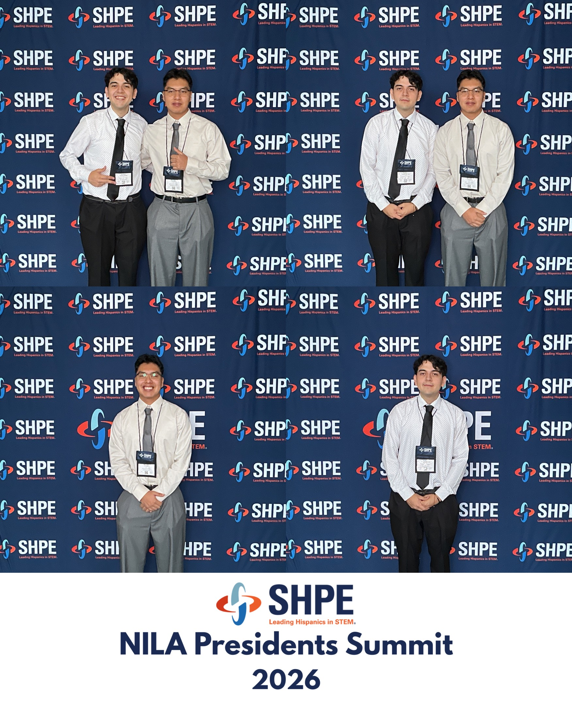

Leadership
I have focused much of my campus leadership on building professional-development opportunities, strengthening community, and supporting students through their transition into college.
Society of Hispanic Professional Engineers — Harvey Mudd College
Founder & Chapter Co-President | January 2026 – Present
I co-founded Harvey Mudd College’s SHPE chapter to expand access to professional development, networking, and engineering opportunities for students across campus.

HMC SHPE co-presidents during the chapter’s first general body meeting.

HMC SHPE representation at a SHPE professional-development conference.
Building the Chapter
- Co-founded the Harvey Mudd SHPE chapter and established its initial leadership structure
- Grew chapter engagement to approximately 52 students
- Developed professional-development programming centered on engineering careers, networking, and technical skills
- Built collaborations with campus departments and student organizations to expand opportunities for members
National Convention & Funding
Working with my co-president, I helped secure approximately $10,000 in first-year institutional funding to support student attendance at the 2026 SHPE National Convention.
Funding efforts included outreach to:
- Harvey Mudd Engineering Department
- ASHMC
- Student Opportunity Fund
- Other institutional funding channels
We also developed an application and selection process to support 12 students attending the national convention.
Professional Development
Current chapter initiatives include:
- Technical portfolio and GitHub development
- Resume and career preparation
- Networking opportunities
- Engineering and professional panels
- Alumni and industry engagement
- Development of a future company sponsorship pipeline
Skills Developed
Organization Building • Fundraising • Professional Development • Event Planning • Team Leadership • Networking • Outreach
SALSA Mudd
Club President | January 2025 – May 2026
Led Harvey Mudd’s Society of Professional Latinx in STEM organization, supporting community-building and academic and professional development.
- Led weekly meetings highlighting academic, professional, and campus opportunities
- Planned and executed 5+ cultural and social events per semester
- Organized study sessions, cultural programming, movie nights, and community events
- Expanded collaboration with Latinx organizations across the five Claremont Colleges
Mentorship & Student Support
Orientation Mentor — Harvey Mudd College
May 2026 – Present
- Supported approximately 57 incoming students during move-in, orientation, and their transition into the residential community
- Helped plan and execute multi-day orientation programming
- Continue to organize dorm events throughout the academic year to strengthen residential community
Summer Institute Mentor — Harvey Mudd College
August 2025 – May 2026
- Directly mentored three students through their transition to Harvey Mudd
- Conducted recurring academic and personal check-ins
- Connected students experiencing academic difficulty with tutoring and campus resources
- Supported academic planning, belonging, and adjustment to college
- Connected mentees with affinity-group and community programming
Latino Sponsor — Chicano-Latino Student Affairs
August 2025 – May 2026
- Mentored five first-year students through recurring one-on-one check-ins
- Supported conversations surrounding identity, belonging, academics, and adjustment to college
- Helped organize cultural and community programming including heritage celebrations, Día de los Muertos, cookouts, and other events across the Claremont Colleges
Residential Counselor — Cal Poly Pomona Upward Bound
Summer 2025
- Supported Calculus and Precalculus instruction for approximately 31 high school students
- Provided afternoon tutoring and academic support
- Lived residentially with program participants and helped maintain program expectations
- Directly mentored a group of seven students
- Planned recreational, creative, and college-preparation activities